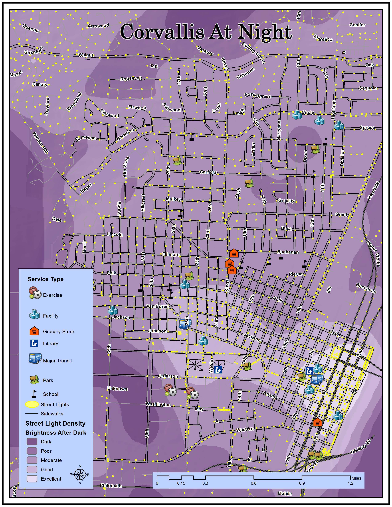

This Web Map introduces the walkability of Corvallis using a storytelling map library.
Network Analysis Of Corvallis Sidewalks
Where can Corvallis improve sidewalks to allow accessibility for all peoples to destinations essential for a healthy lifestyle?
For analysis of accessibility on sidewalks, I digitized sidewalks for a portion of Corvallis. Connectivity is the key for building network datasets, so I connected sidewalks across streets only where ADA ramps are located. This layer came from the City of Corvallis.
Setting up parameters for the network to calculate the walking rate per minutes proved to be the most difficult part, but with this, I can select multiple stops and if ADA ramped sidewalks are connecting the stops, a route is generated. The walking rate set up in the parmaeter was slowed down by 10% to account for all members of the community including senior citizens, those with disabilities, or someone that prefers to walk slow.
These routes in the image below show common stops one may take while walking. The purple route starts at Fred Meyers for some grocery shopping and stops at Block 15; this should take over an hour for anyone walking. The green route starts at Corvallis High School, stops at a house in a near neighborhood, and ends at the Benton Public Library. The yellow route goes from OSU Book Store to Monroe&Kings Bus stop. Finally the longest working route starts in the Elmwood neighborhood, stops at Zion Lutheran School, a couple different neighborhoods, ending in Downtown. This route shows the connectivity of Corvallis the most and a really long walk.

A future goal for this project includes finishing digitizing all of Corvallis sidewalks including south town, make edits to the existing network, and creating a working interactive network.
Which service areas (points of interest that ensure a healthy lifestyle) are lacking in accessibility relative to the surrounding area?
I performed a service area analysis from a filter of the City of Corvallis' places shapefile. My service areas included schools, parks, and grocery stores.

Corvallis At Night
How well are you able to see while walking in Corvallis after dark?
Adding streetlights from the City of Corvallis and running a kernal density determined the brightness of Corvallis after dark.
